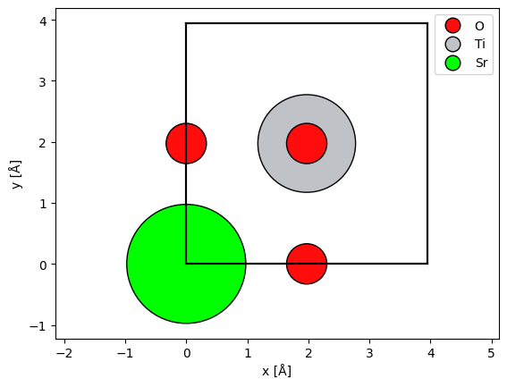
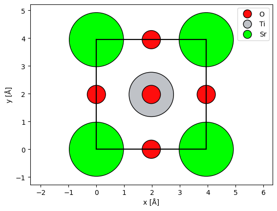
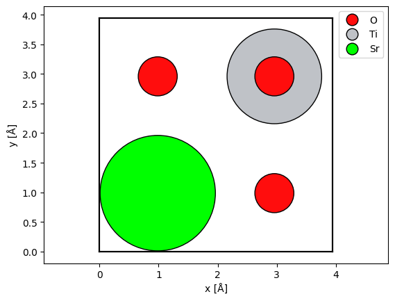
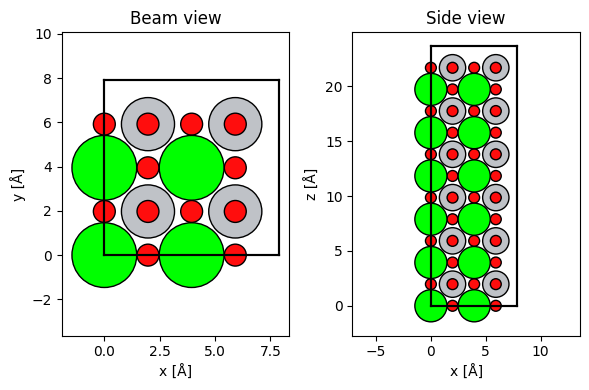

Atomic models#
abTEM uses the Atomic Simulation Environment (ASE) for creating model atomic structures [LMB+17]. ASE is a set of open-source tools and Python modules for setting up, manipulating, visualizing and analyzing atomistic simulations. It is also used in conjunction with other simulation codes such as GPAW for running density functional theory (DFT) simulations.
Here, we introduce the set of features of ASE needed for image simulations; please refer to the ASE documentation for a more general introduction.
Atoms#
The Atoms object defines a collection of atoms, ie. our specimen. Here is how to set up an N2 molecule by directly specifying the position of the two nitrogen atoms (in units of Ångstrom, which is the default in both ASE and abTEM).
n2 = ase.Atoms(
"N2", positions=[(0.0, 0.0, 0.0), (0.0, 0.0, 1.10)], cell=[2, 2, 2], pbc=True
)
A basic abTEM simulation only uses the positional coordinates, atomic numbers and the unit cell for creating electrostatic potentials using the independent atom model.
The atomic numbers are an array of integers.
n2.numbers
array([7, 7])
The \(xyz\) positions are an \(N\times 3\) array, where \(N\) is the number of atoms.
n2.positions
array([[0. , 0. , 0. ],
[0. , 0. , 1.1]])
The unit cell associated with the atoms is slightly more complicated. When we access it here, we get three numbers, corresponding to the length of each side of the cell. This is because the unit vectors of this cell are orthogonal and axis-aligned, hence the cell can be given as just the sides of a rectangular cuboid.
n2.cell
Cell([2.0, 2.0, 2.0])
In general, a cell is defined by three lattice vectors. We can convert the Cell to a NumPy array, to print the full representation of the cell below, where each row represents a lattice vector.
np.array(n2.cell)
array([[2., 0., 0.],
[0., 2., 0.],
[0., 0., 2.]])
Important
The multislice algorithm requires that the unit vectors of the cell are orthogonal and axis-aligned, and additionally, the cell must be periodic. Fulfilling both of these constraints when creating a desired model structure is not always trivial, see our advanced tutorial for an introduction to the problem and tools abTEM implements to help solve it.
Import/export#
In addition to defining structures using code, ASE can import all the common atomic structure formats, see a full list here. Below we import a .cif-file defining a unit cell of strontium titanate (SrTiO3).
srtio3 = ase.io.read("./data/SrTiO3.cif")
Warning
Unlike some other multislice simulation codes, abTEM does not use any Debye-Waller factors or partial occupations embedded in structure files. Our philosophy is that those should be explicitly modeled.
Of course, we can also write the structure back to disk.
ase.io.write("./data/SrTiO3.cif", srtio3)
Visualizing structures#
The simplest way to visualize the atoms is our show_atoms function. This creates a matplotlib figure of a 2D orthogonal projection of the structure perpendicular to a specified plane (default being the xy plane that is perpendicular to the default propagation direction in abTEM).
abtem.show_atoms(
srtio3,
plane="xy", # show a view perpendicular to the 'xy' plane
scale=0.5, # scale atoms to 0.5 of their covalent radii; default is 0.75
legend=True, # show a legend with the atomic symbols
);

The multislice algorithm requires periodic boundary conditions, and thus we should imagine that the atoms at a boundary have an equivalent image at the opposite side. We can show the periodic images of the boundary atoms by setting show_periodic=True.
abtem.show_atoms(
srtio3,
show_periodic=True,
scale=0.5,
legend=True,
);

Alternatively, we may center a copy of the atoms (copied to avoid changing the original atoms) before displaying them using the center method, but this may not be ideal for visualizing the potential.
centered_srtio3 = srtio3.copy()
centered_srtio3.center()
abtem.show_atoms(
centered_srtio3,
scale=0.5,
legend=True,
);

Manipulating structures#
The structure you import or build may not match your requirements or the requirements of abTEM. The most commonly needed manipulation is to repeat the structure to create a supercell.
For many more examples, see our tutorial on advanced atomic models, which includes examples on rotating, scaling, and combining structures, ase well as our tutorial on creating orthogonal periodic supercells that are required for multislice simulations.
Repeating the structure#
It is often necessary to create a larger supercell from a unit cell. For example, you may need to increase the thickness of the structure by repeating it along the \(z\)-axis.
Warning
In STEM, the \(xy\)-extent of the model structure have to be large enough to accomodate the size of the probe to prevent self-interaction with its periodic images.
ASE atomic structures may be repeated simply by multiplying them with a tuple of 3 integers.
repeated_srtio3 = srtio3 * (2, 2, 6)
fig, (ax1, ax2) = plt.subplots(1, 2, figsize=(6, 4))
abtem.show_atoms(repeated_srtio3, ax=ax1, title="Beam view")
abtem.show_atoms(repeated_srtio3, ax=ax2, plane="xz", title="Side view")
fig.tight_layout();

Let us then move on to discuss how we create the electrostatic scattering potentials from such atomic structures (click “Potentials” at the bottom-right of the page).